Reading/Plotting the values of different parameter sets
ReadPlot_convergence.RdThis function reads a file containing different parameter sets and ther corresponfing goodness-of-fit values
Usage
read_convergence(file="ConvergenceMeasures.txt", MinMax=NULL, beh.thr=NA,
verbose=TRUE, plot=TRUE, col=c("black", "darkolivegreen"), lty=c(1,3),
lwd=c(2,2), main="Global Optimum & Normalized Swarm Radius vs Iteration Number",
xlab="Iteration Number", ylab=c("Global Optimum", expression(delta[norm])),
pch=c(15, 18), cex=1, cex.main=1.4, cex.axis=1.2, cex.lab=1.2,
legend.pos="topright", ..., do.png=FALSE, png.width=1500, png.height=900,
png.res=90,png.fname="ConvergenceMeasures.png")
plot_convergence(x, verbose=TRUE, col=c("black", "darkolivegreen"), lty=c(1,3),
lwd=c(2,2), main="Global Optimum & Normalized Swarm Radius vs Iteration Number",
xlab="Iteration Number", ylab=c("Global Optimum", expression(delta[norm])),
pch=c(15, 18), cex=1, cex.main=1.4, cex.axis=1.2, cex.lab=1.2,
legend.pos="topright", ..., do.png=FALSE, png.width=1500, png.height=900,
png.res=90, png.fname="ConvergenceMeasures.png")Arguments
- file
character, name (including path) of the file to be read
- verbose
logical; if TRUE, progress messages are printed
- x
data.frame with the convergence outputs obtained with
read_convergence.- MinMax
OPTIONAL
character, indicates if the optimum value inparamscorresponds to the minimum or maximum of the the objective function. Valid values are in:c('min', 'max')- beh.thr
numeric, used for selecting only the behavioural parameter sets, i.e., those with a goodness-of-fit value larger/lowervalue than
beh.th, depending on the value ofMinMax.
It is only used for drawing a horizontal line used for separating behavioural from non behavioural parameter sets.- plot
logical, indicates if a plot with the convergence measures has to be produced
- col
OPTIONAL. Only used when
plot=TRUE
character, colour to be used for drawing the lines- lty
OPTIONAL. Only used when
plot=TRUE
numeric, line type to be used- lwd
OPTIONAL. Only used when
plot=TRUE
numeric, line width- xlab
OPTIONAL. Only used when
plot=TRUE
character, label for the 'x' axis- ylab
OPTIONAL. Only used when
plot=TRUE
character, label for the 'y' axis- main
OPTIONAL. Only used when
plot=TRUE
character, title for the plot- pch
OPTIONAL. Only used when
plot=TRUE
numeric, type of symbol for drawing the points of the dotty plots (e.g., 1: white circle)- cex
OPTIONAL. Only used when
plot=TRUE
numeric, values controlling the size of text and points with respect to the default- cex.main
OPTIONAL. Only used when
plot=TRUE
numeric, magnification to be used for main titles relative to the current setting ofcex- cex.axis
OPTIONAL. Only used when
plot=TRUE
numeric, magnification to be used for axis annotation relative to the current setting ofcex- cex.lab
OPTIONAL. Only used when
plot=TRUE
numeric, magnification to be used for x and y labels relative to the current setting ofcex- legend.pos
OPTIONAL. Only used when
plot=TRUE
character, position of the legend. Valid values are inc("bottomright", "bottom", "bottomleft", "left", "topleft", "top", "topright", "right", "center"). Seelegend- ...
OPTIONAL. Only used when
plot=TRUE
further arguments passed to the plot command or from other methods- do.png
logical, indicates if the plot with the convergence measures has to be saved into a PNG file instead of the screen device
- png.width
OPTIONAL. Only used when
do.png=TRUE
numeric, width of the device. Seepng- png.height
OPTIONAL. Only used when
do.png=TRUE
numeric, height of the device. Seepng- png.res
OPTIONAL. Only used when
do.png=TRUE
numeric, nominal resolution in ppi which will be recorded in the PNG file, if a positive integer of the device. Seepng- png.fname
OPTIONAL. Only used when
do.png=TRUE
character, name of the output PNG file. Seepng
Value
A list with the following elements:
- Iter
iteration number
.
- Gbest
global optimum for each iteration
.
- GbestRate
rate of change of the global optimum (current iter/previous iter)
.
- IterBestFit
best performance for the current iteration
.
- normSwarmRadius
normalised swarm radious
.
- [gbest-mean(pbest)]/mean(pbest)
gbest: global optimum, mean(pbest): mean values of the personal best of all the particles
Author
Mauricio Zambrano-Bigiarini, mzb.devel@gmail.com
Examples
# \donttest{
local({
# Setting the user temporal directory as working directory
oldwd <- getwd()
on.exit(setwd(oldwd), add = TRUE)
setwd(tempdir())
# Number of dimensions to be optimised
D <- 4
# Boundaries of the search space (Sphere function)
lower <- rep(-100, D)
upper <- rep(100, D)
# Setting the seed
set.seed(100)
# Runing PSO with the 'sphere' test function, writting the results to text files
hydroPSO(fn=sphere, lower=lower, upper=upper,
control=list(MinMax="min", write2disk=TRUE, plot=TRUE)
)
# Reading the convergence measures got by running hydroPSO
read_convergence(file="./PSO.out/ConvergenceMeasures.txt")
}) # local END
#>
#> ================================================================================
#> [ Initialising ... ]
#> ================================================================================
#>
#> [npart=40 ; maxit=1000 ; method=spso2011 ; topology=random ; boundary.wall=absorbing2011]
#>
#> [ user-definitions in control: MinMax=min ; write2disk=TRUE ; plot=TRUE ]
#>
#>
#> ================================================================================
#> [ Writing the 'PSO_logfile.txt' file ... ]
#> ================================================================================
#>
#> ================================================================================
#> [ Running PSO ... ]
#> ================================================================================
#>

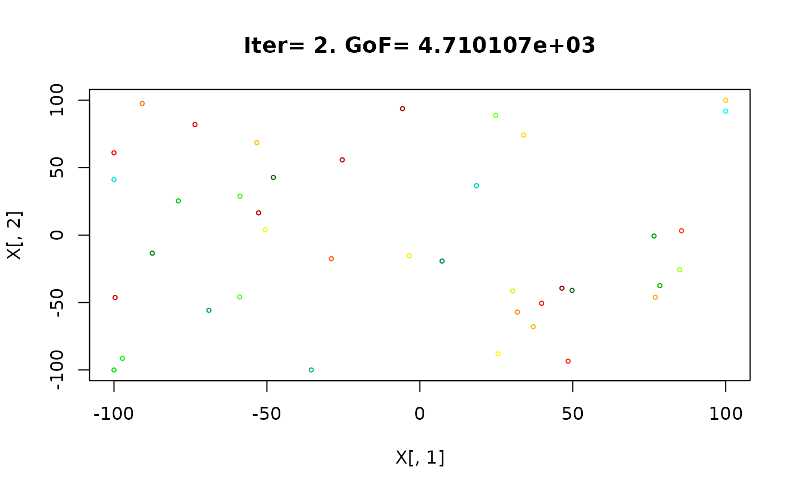


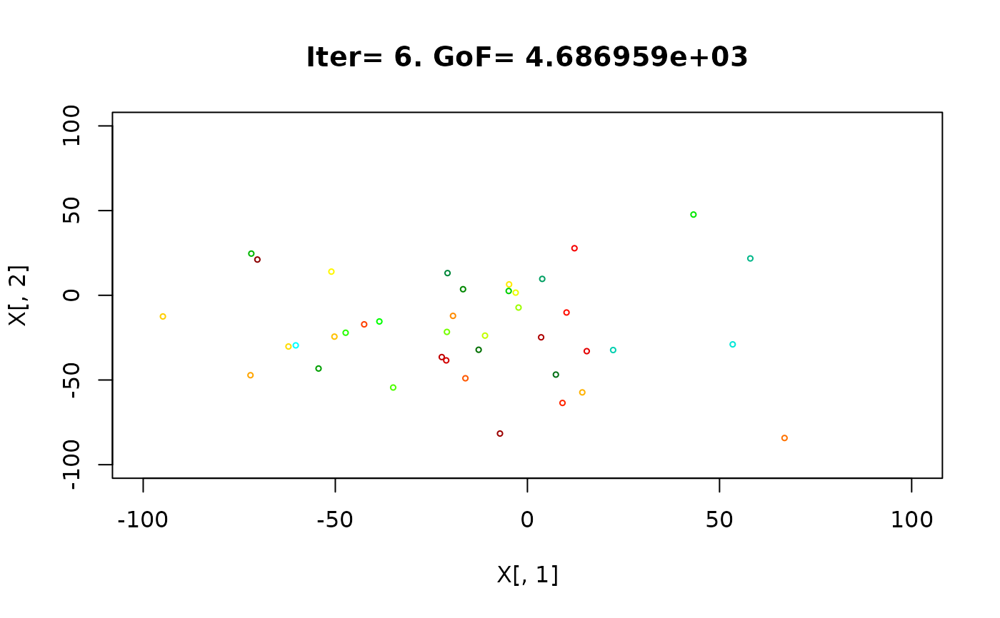


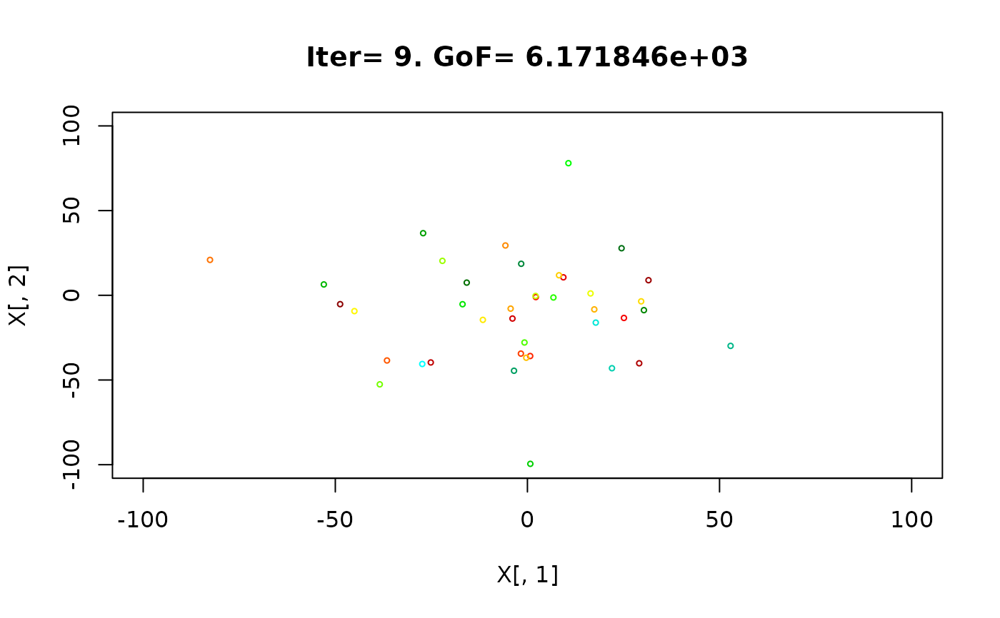


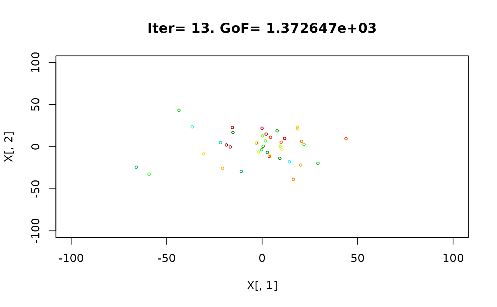

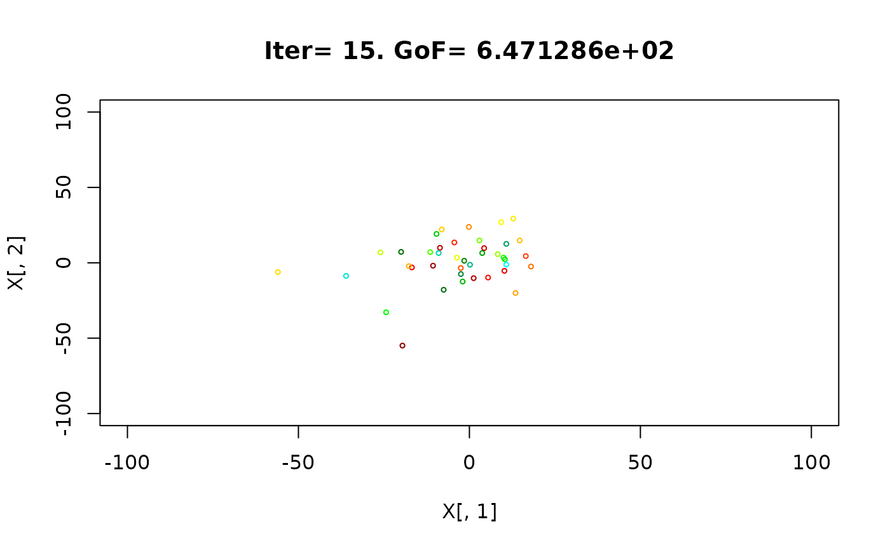


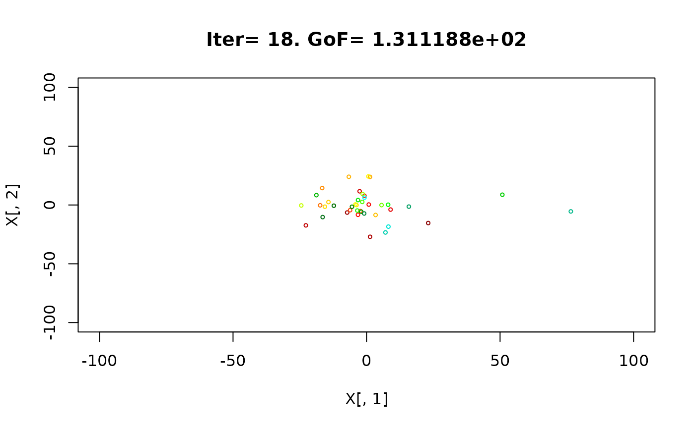


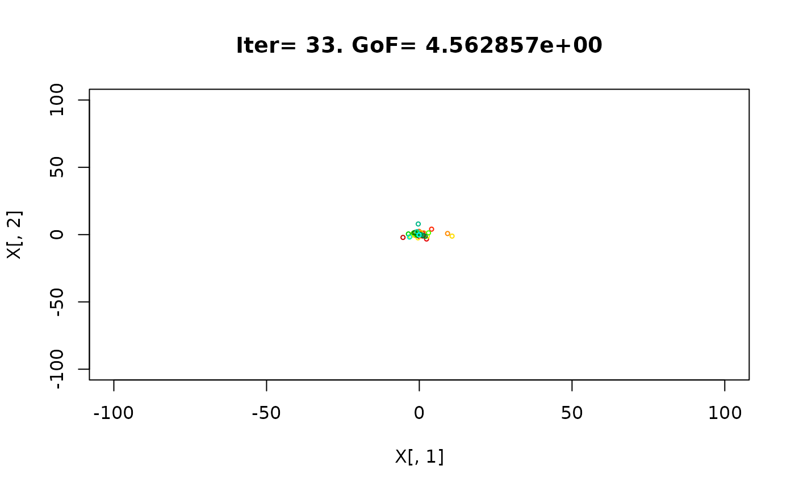


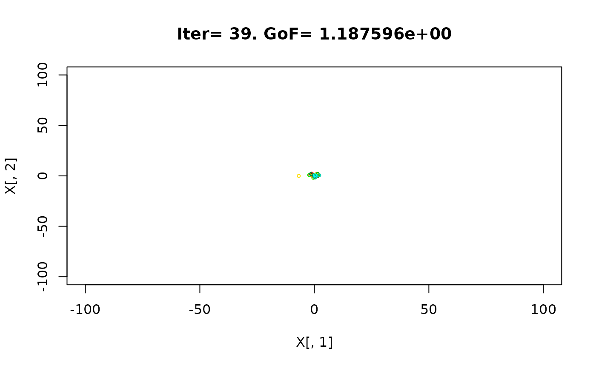
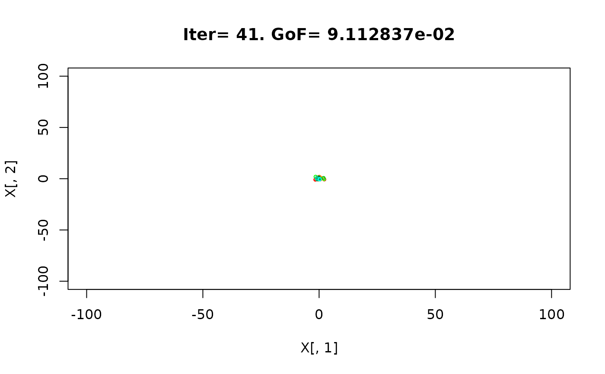


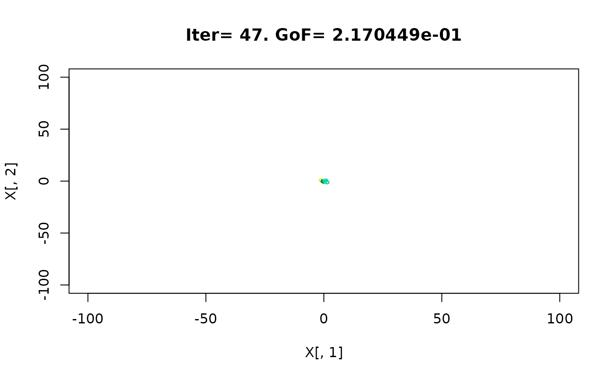


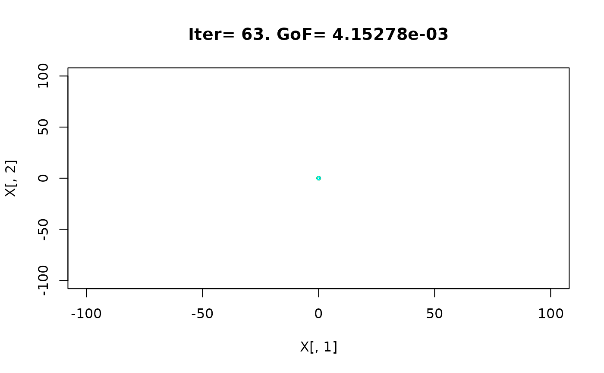


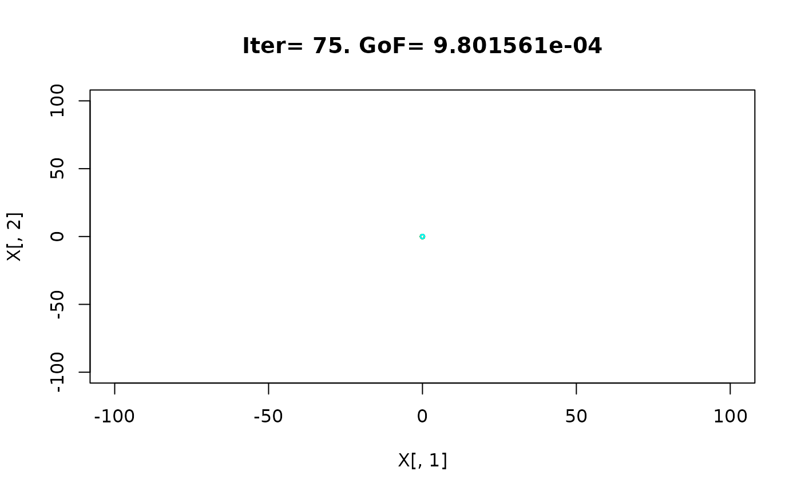


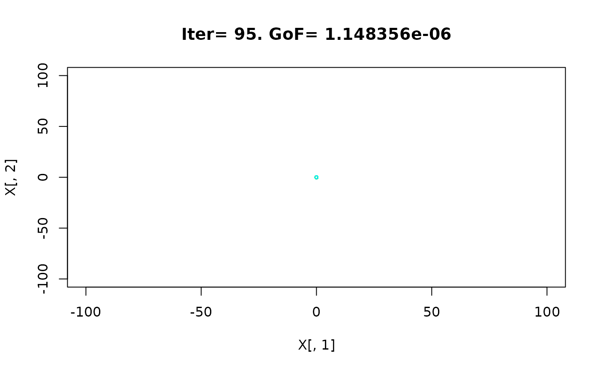


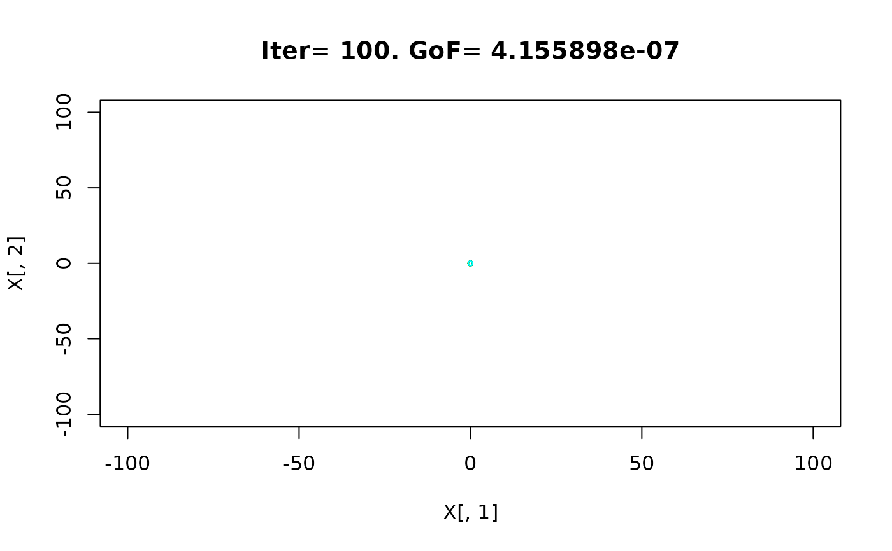
#> iter: 100 Gbest: 6.143E-08 Gbest_rate: 66.13% Iter_best_fit: 6.143E-08 nSwarm_Radius: 3.14E-06 |g-mean(p)|/mean(p): 98.08%
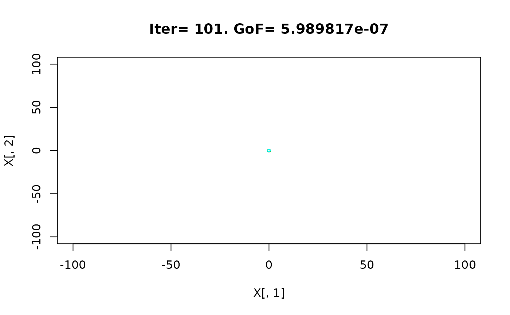
#>
#> [ Writing output files... ]
#>
#> |
#> ================================================================================
#> [ Creating the R output ... ]
#> ================================================================================
#>
#> [ Reading the file 'ConvergenceMeasures.txt' ... ]
#> [ Total number of iterations: 102 ]
#> [ Plotting convergence measures' ... ]
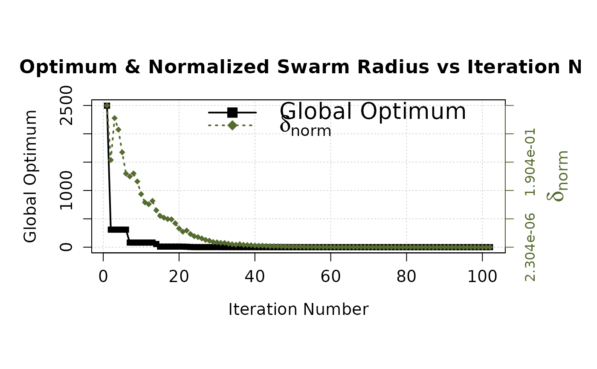
#> Iter Gbest GbestRate IterBestFit normSwarmRadius GbestPbestRatio
#> 1 1 2.496037e+03 100.000 2.496037e+03 3.172621e-01 80.803
#> 2 2 3.089613e+02 87.622 3.089613e+02 1.952015e-01 95.008
#> 3 3 3.089613e+02 0.000 1.373981e+03 2.889168e-01 94.882
#> 4 4 3.089613e+02 0.000 2.075614e+03 2.632173e-01 94.630
#> 5 5 3.089613e+02 0.000 1.233861e+03 2.124345e-01 93.653
#> 6 6 3.089613e+02 0.000 9.065310e+02 1.646323e-01 91.288
#> 7 7 8.134900e+01 73.670 8.134900e+01 1.583449e-01 97.263
#> 8 8 8.134900e+01 0.000 7.774286e+02 1.650119e-01 96.915
#> 9 9 8.134900e+01 0.000 5.422436e+02 1.471361e-01 96.285
#> 10 10 8.134900e+01 0.000 2.068215e+02 1.187738e-01 95.143
#> 11 11 8.134900e+01 0.000 1.551307e+02 1.002909e-01 93.886
#> 12 12 8.134900e+01 0.000 1.892053e+02 9.612793e-02 92.767
#> 13 13 8.134900e+01 0.000 1.398016e+02 1.035551e-01 91.633
#> 14 14 5.554823e+01 31.716 5.554823e+01 8.237369e-02 93.576
#> 15 15 9.647942e+00 82.631 9.647942e+00 7.007312e-02 98.702
#> 16 16 9.647942e+00 0.000 2.329054e+01 6.603689e-02 98.545
#> 17 17 9.647942e+00 0.000 3.492954e+01 6.294083e-02 98.244
#> 18 18 9.647942e+00 0.000 3.519265e+01 6.226520e-02 98.129
#> 19 19 9.647942e+00 0.000 2.785130e+01 5.352650e-02 97.485
#> 20 20 9.647942e+00 0.000 2.846986e+01 4.183406e-02 96.781
#> 21 21 9.023023e+00 6.477 9.023023e+00 3.460949e-02 96.346
#> 22 22 7.303407e+00 19.058 7.303407e+00 3.724562e-02 96.352
#> 23 23 3.008332e+00 58.809 3.008332e+00 2.944322e-02 98.182
#> 24 24 6.933120e-01 76.954 6.933120e-01 2.454574e-02 99.378
#> 25 25 6.933120e-01 0.000 2.813179e+00 2.254574e-02 99.227
#> 26 26 6.933120e-01 0.000 4.441790e+00 1.950986e-02 99.043
#> 27 27 6.933120e-01 0.000 1.749271e+00 1.627126e-02 98.790
#> 28 28 6.716446e-01 3.125 6.716446e-01 1.449753e-02 98.538
#> 29 29 6.716446e-01 0.000 6.754569e-01 1.154765e-02 98.070
#> 30 30 6.716446e-01 0.000 8.211323e-01 1.083901e-02 96.974
#> 31 31 6.716446e-01 0.000 6.767017e-01 9.583346e-03 96.319
#> 32 32 9.146959e-02 86.381 9.146959e-02 9.386729e-03 99.393
#> 33 33 9.146959e-02 0.000 1.115529e+00 7.737459e-03 99.317
#> 34 34 9.146959e-02 0.000 1.019398e-01 6.407650e-03 99.196
#> 35 35 9.146959e-02 0.000 2.000663e-01 5.495661e-03 99.067
#> 36 36 9.146959e-02 0.000 3.070983e-01 6.685656e-03 98.738
#> 37 37 9.146959e-02 0.000 2.832960e-01 5.199535e-03 98.384
#> 38 38 9.146959e-02 0.000 3.110369e-01 4.891508e-03 97.939
#> 39 39 9.146959e-02 0.000 2.456618e-01 4.476079e-03 97.714
#> 40 40 9.146959e-02 0.000 1.361169e-01 3.520348e-03 97.448
#> 41 41 9.112837e-02 0.373 9.112837e-02 3.243466e-03 96.511
#> 42 42 9.112837e-02 0.000 1.108540e-01 3.288174e-03 95.666
#> 43 43 8.390113e-02 7.931 8.390113e-02 2.722801e-03 94.947
#> 44 44 3.161287e-02 62.321 3.161287e-02 2.128737e-03 97.719
#> 45 45 3.161287e-02 0.000 4.607031e-02 2.132200e-03 97.506
#> 46 46 3.161287e-02 0.000 4.610374e-02 1.982863e-03 96.761
#> 47 47 4.207934e-03 86.689 4.207934e-03 1.757924e-03 99.427
#> 48 48 4.207934e-03 0.000 1.069408e-02 1.358194e-03 99.318
#> 49 49 4.207934e-03 0.000 2.019614e-02 1.366197e-03 99.149
#> 50 50 4.207934e-03 0.000 1.002616e-02 1.259148e-03 98.974
#> 51 51 4.207934e-03 0.000 6.585332e-03 1.175506e-03 98.839
#> 52 52 1.835719e-03 56.375 1.835719e-03 9.926934e-04 99.398
#> 53 53 1.835719e-03 0.000 5.948079e-03 8.758056e-04 99.204
#> 54 54 1.835719e-03 0.000 7.329408e-03 7.011485e-04 98.785
#> 55 55 1.835719e-03 0.000 1.028233e-02 7.229435e-04 98.525
#> 56 56 1.398915e-03 23.795 1.398915e-03 5.991501e-04 98.511
#> 57 57 1.398915e-03 0.000 2.302913e-03 4.940016e-04 97.773
#> 58 58 1.398915e-03 0.000 1.854917e-03 4.581696e-04 96.907
#> 59 59 1.146212e-03 18.064 1.146212e-03 3.905583e-04 97.064
#> 60 60 1.146212e-03 0.000 1.503596e-03 3.649289e-04 96.817
#> 61 61 1.146212e-03 0.000 1.559456e-03 3.174378e-04 95.825
#> 62 62 3.068545e-04 73.229 3.068545e-04 2.760338e-04 98.472
#> 63 63 3.068545e-04 0.000 1.000044e-03 2.521666e-04 98.060
#> 64 64 3.068545e-04 0.000 6.712116e-04 2.536867e-04 97.674
#> 65 65 3.068545e-04 0.000 3.913582e-04 2.162801e-04 97.344
#> 66 66 3.068545e-04 0.000 1.094820e-03 2.133923e-04 96.929
#> 67 67 3.068545e-04 0.000 7.063522e-04 2.070140e-04 95.726
#> 68 68 2.049828e-04 33.199 2.049828e-04 1.651334e-04 96.399
#> 69 69 4.168625e-05 79.664 4.168625e-05 1.443711e-04 99.147
#> 70 70 4.168625e-05 0.000 8.322529e-05 1.415024e-04 99.008
#> 71 71 4.168625e-05 0.000 1.722213e-04 1.370242e-04 98.743
#> 72 72 4.168625e-05 0.000 1.902369e-04 1.164545e-04 98.413
#> 73 73 4.168625e-05 0.000 6.447493e-05 9.929215e-05 98.012
#> 74 74 3.072050e-05 26.305 3.072050e-05 7.914288e-05 98.216
#> 75 75 3.072050e-05 0.000 5.209704e-05 7.493874e-05 97.941
#> 76 76 3.072050e-05 0.000 7.213335e-05 6.704383e-05 97.707
#> 77 77 2.140574e-05 30.321 2.140574e-05 6.165041e-05 97.864
#> 78 78 9.882768e-06 53.831 9.882768e-06 4.987594e-05 98.810
#> 79 79 9.882768e-06 0.000 1.086764e-05 4.043539e-05 98.448
#> 80 80 3.405683e-06 65.539 3.405683e-06 3.562276e-05 99.285
#> 81 81 3.405683e-06 0.000 7.110449e-06 3.070367e-05 99.097
#> 82 82 3.405683e-06 0.000 1.083147e-05 2.764154e-05 98.768
#> 83 83 2.496317e-06 26.701 2.496317e-06 2.395479e-05 98.726
#> 84 84 2.496317e-06 0.000 6.148388e-06 2.251955e-05 98.503
#> 85 85 1.211539e-06 51.467 1.211539e-06 1.947720e-05 99.203
#> 86 86 1.040015e-06 14.158 1.040015e-06 1.749146e-05 99.283
#> 87 87 1.040015e-06 0.000 2.782354e-06 1.653610e-05 98.930
#> 88 88 1.040015e-06 0.000 1.790423e-06 1.410923e-05 98.074
#> 89 89 1.033346e-06 0.641 1.033346e-06 1.216543e-05 97.967
#> 90 90 1.033346e-06 0.000 1.724961e-06 1.128046e-05 97.823
#> 91 91 9.932600e-07 3.879 9.932600e-07 1.086178e-05 97.848
#> 92 92 9.932600e-07 0.000 1.387926e-06 8.944578e-06 97.554
#> 93 93 9.932600e-07 0.000 1.138679e-06 7.392670e-06 93.970
#> 94 94 4.354435e-07 56.160 4.354435e-07 6.297021e-06 97.101
#> 95 95 3.636878e-07 16.479 3.636878e-07 5.858944e-06 97.401
#> 96 96 1.813750e-07 50.129 1.813750e-07 6.007477e-06 98.639
#> 97 97 1.813750e-07 0.000 3.349881e-07 4.841607e-06 96.863
#> 98 98 1.813750e-07 0.000 2.747090e-07 3.825328e-06 95.703
#> 99 99 1.813750e-07 0.000 2.339099e-07 3.693049e-06 95.115
#> 100 100 6.142730e-08 66.132 6.142730e-08 3.142231e-06 98.079
#> 101 101 6.142730e-08 0.000 1.441196e-07 2.783280e-06 97.522
#> 102 102 6.142730e-08 0.000 1.585029e-07 2.303783e-06 96.585
# } # donttest END